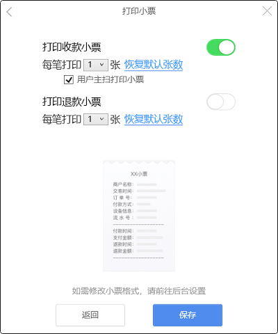

提醒设置与小票设置
1.提醒设置
（1）悬浮窗
悬浮窗有大窗和小窗两种模式，默认开启大窗，勾选“显示为小浮标（不带金额）”选项后变为小窗。

（2）成功页提醒倒计时
支付成功后默认两秒关闭支付成功页面，该功能可以修改关窗倒计时。
（3）消息框设置
消息窗口主要显示主扫信息（顾客扫商家收款码），这里控制是否开启提醒和开启后自动关闭的倒计时。

（4）语音提醒设置
语音提醒一共有两种模式，一种是“播报金额”，一种是“简洁”。
“播报金额”就是由人声完整播报支付、退款消息，“简洁”则只播放提示音。

2.小票设置
小票设置内有“支付凭证”和“退款凭证”两个选项，开启后打印，不开启不打印。
